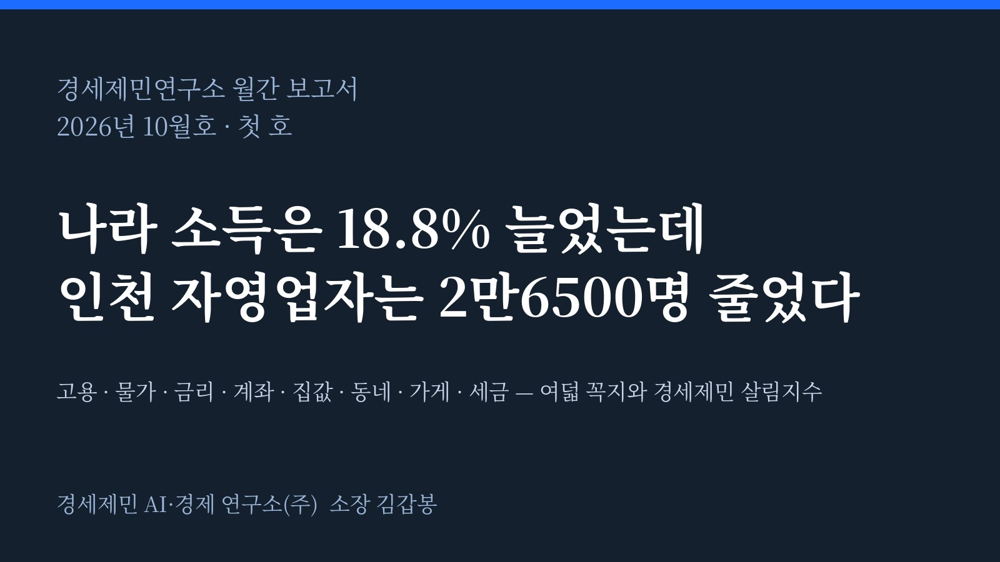
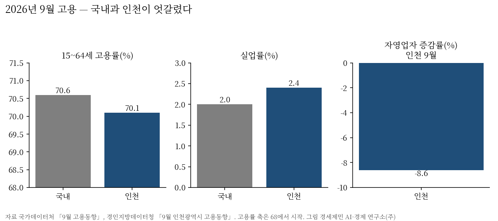

[보도자료] 경세제민연구소, 10월 보고서…「인천 자영업자 1년 새 2만6500명 감소」
2026년 11월 5일 배포, 바로 보도할 수 있음
문의 경세제민 AI·경제 연구소(주) 032-777-0421 · weminpress@gmail.com
경세제민 AI·경제 연구소(주)(소장 김갑봉)는 11월 5일 10월 보고서를 펴냈다고 밝혔다. 매달 내는 정기 보고서인 이 보고서는 9월 통계를 기준으로 시민 살림에 닿는 숫자를 여덟 꼭지로 읽고, 숫자마다 기관 원문과 맞췄다.
주요 내용 여섯
첫째, 9월 인천 자영업자는 28만2300명으로 1년 전보다 2만6500명(8.6%) 줄었다. 같은 달 국내 취업자는 11만3000명 늘었다.
둘째, 3분기 실질 국내총소득은 18.8% 늘었으나 민간소비는 전 분기보다 0.2% 줄었다. 6~8월 비정규직 실질 월급은 1.8% 줄었다(연구소 계산).
셋째, 9월 생산자물가 7.7%와 소비자물가 2.9%의 차이, 곧 연구소가 「전가 간격」이라 부르는 값은 4.8%포인트다.
넷째, 9월 신규 가계대출 금리는 4.96%로, 새로 빌리는 사람의 1억원당 월 이자가 한 달 새 1만6667원 늘었다.
다섯째, 인천 아파트 전셋값은 올해 10월 26일까지 4.60% 올라 매매가 0.76%와 3.84%포인트 벌어졌다. 국내 간격의 3.5배다.
여섯째, 10월 인천시가 연 도시계획 열람 8건 가운데 결정안을 연 것은 2건이었다.

연구소 제언
연구소는 인천시가 자영업자 증감을 업종과 군·구로 나눠 다달이 공개하기를 제안했다. 지역사랑상품권 국비 259억원 증액 건의가 국회 심사에서 어떻게 결론 나는지는 다음 호가 추적한다. 정책금융의 만기 연장과 금리 감면은 담보 없는 자영업자에게 먼저 가야 한다고 적었다.
자료 안내
보고서 요약은 연구소 누리집(weminai.com/media/rep02.html)에 있다. 숫자는 국가데이터처·한국은행·금융위원회·금융감독원·관세청·기획예산처·한국부동산원·국토교통부·인천광역시가 낸 원문에서 옮겼으며, 가공 지표는 연구소가 셈만 했고 추정은 넣지 않았다.

인용할 때는 「경세제민 AI·경제 연구소 10월 보고서(2026)」로 출처를 밝혀 주시기 바란다.
참고문헌
- 경세제민 AI·경제 연구소(2026.11.5). 「10월 보고서」 요약. https://weminai.com/media/rep02.html
- 경인지방데이터청(2026.10.16). 「2026년 9월 인천광역시 고용동향」. 인천시 일자리플랫폼. https://www.incheon.go.kr/jobs/main/pst/list.do?pst_id=m_job_trend
- 국가데이터처(2026.10.21). 「2026년 8월 경제활동인구조사 근로형태별 부가조사 결과」. https://eiec.kdi.re.kr/policy/materialView.do?num=288340
- 국가데이터처(2026.10.2). 「2026년 9월 소비자물가동향」. https://eiec.kdi.re.kr/policy/materialView.do?num=287770
- 국가데이터처(2026.10.22). 「2025년 기업생멸행정통계(잠정) 결과」. https://eiec.kdi.re.kr/policy/materialView.do?num=288411
- 한국은행(2026.10.27). 「2026년 3/4분기 실질 국내총생산(속보)」. https://www.bok.or.kr/portal/bbs/B0000501/view.do?nttId=11065944&menuNo=201264
- 한국은행(2026.10.29). 「2026년 9월 금융기관 가중평균금리」. https://eiec.kdi.re.kr/policy/materialView.do?num=288715
- 한국부동산원(2026.10.29). 「2026년 10월 4주 주간 아파트가격 동향」(10월 26일 기준). https://www.reb.or.kr/reb/na/ntt/selectNttInfo.do?mi=9565&bbsId=1154&nttSn=118012
[사진 출처]
- [도표1~4] 경세제민 AI·경제 연구소(주) 작성. 자료 국가데이터처, 경인지방데이터청, 한국은행
- [표지] 경세제민 AI·경제 연구소(주) 작성
관련기사
- [10월 보고서] 나라 소득은 18.8% 늘었는데 인천 자영업자는 2만6500명 줄었다
- 나라 소득 18.8% 늘 때 인천 자영업자 2만6500명 줄었다
- 인천 지방정부는 무엇을 연구에 맡기는가
- 국내 자영업자 늘 때 인천은 2만6500명 줄었다
저작권자 © AI경제저널 무단전재 및 재배포, AI학습 및 활용 금지